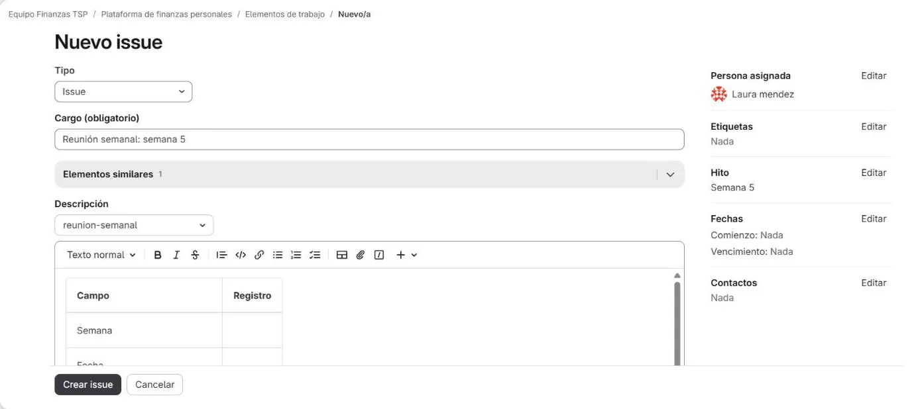
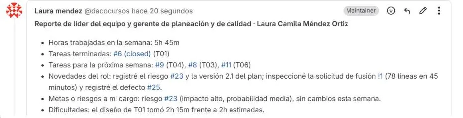
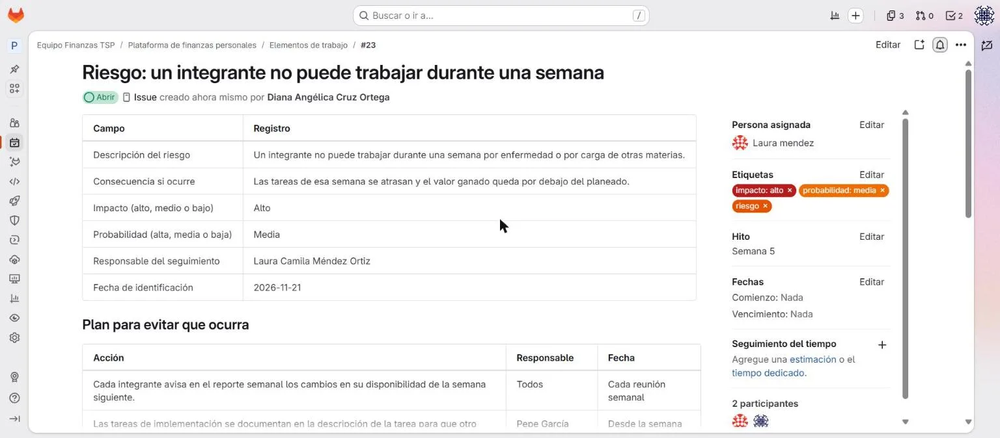

La reunión semanal
Qué es. Es la reunión en la que el equipo revisa cada semana cómo va frente al plan. Cada integrante, según su rol, presenta un reporte breve, y al final el gerente de planeación presenta el estado del proyecto. Es una de las herramientas principales de TSP para el seguimiento (Lectura 6, sección 3).
Para qué sirve. Con los datos de la semana el equipo sabe si va al día, atrasado o adelantado, identifica a tiempo quién necesita ayuda y decide las acciones de la semana siguiente. El acta deja constancia de esas decisiones y de los compromisos.
reunion-semanal.Cómo se hace
- Antes de la reunión, quien la modera crea el acta: un elemento de trabajo de tipo Issue con un título como
Reunión semanal: semana 6. En Elegir una plantilla (Choose a template) seleccionareunion-semanal, la plantilla que el equipo creó en la etapa 1.
Acta de la reunión semanal creada con la plantilla del equipo. - En el panel derecho asigna el hito de la semana y, en Persona asignada (Assignee), a quien registra el acta. Selecciona Crear issue. La etiqueta
reunion-semanalla pone la plantilla. - Antes o durante la reunión, cada integrante abre el acta y agrega su reporte como comentario, con el modelo de la sección Reportes de cada rol.
- Durante la reunión, quien registra el acta completa en la descripción la revisión de los compromisos anteriores, el estado del proyecto, las decisiones y los compromisos nuevos. Para editarla, selecciona Editar (Edit), arriba a la derecha.
- Cada participante registra en el acta el tiempo de la reunión, con la fase
Gestión, como se explica en la etapa 2. - Al terminar, quien registró el acta la cierra con Cerrar issue (Close issue). Los compromisos quedan como tareas del plan o como comentarios en las tareas que ya existen.
Reportes de cada rol
Qué es. TSP organiza la reunión semanal en reportes breves, presentados por quien tiene la responsabilidad correspondiente (Lectura 6, secciones 3.1 a 3.6). En GitLab cada reporte es un comentario en el acta de la reunión.
| Reporte | Quién lo presenta | Qué incluye |
|---|---|---|
| Reporte del líder | Líder del equipo | Novedades del proyecto, problemas conocidos y acciones principales de la semana siguiente |
| Reporte de roles de gestión | Gerentes de desarrollo, de calidad y proceso, y de soporte | Actividades del rol en la semana, actividades previstas y novedades del rol |
| Reporte de metas | Responsable de cada meta del equipo | Cómo va cada meta y si hay cambios o temas críticos |
| Reporte de riesgos | Responsable de cada riesgo | Cambios en el impacto o la probabilidad de cada riesgo y acciones preventivas o correctivas |
| Reporte de estado individual | Cada integrante | Horas trabajadas, tareas terminadas, tareas de la semana siguiente y lo que afecte su plan |
| Reporte de estado del proyecto | Gerente de planeación, al final | Horas planeadas y dedicadas, valor planeado y valor ganado, y si el equipo va al día, atrasado o adelantado |
Como cada integrante tiene un rol, su comentario reúne el reporte de su rol y su estado individual. Las metas y los riesgos los reporta quien es responsable de cada uno.
Modelo del comentario
**Reporte de [rol] · [nombre]** - Horas trabajadas en la semana: - Tareas terminadas: # - Tareas para la próxima semana: # - Novedades del rol: - Metas o riesgos a mi cargo: - Dificultades:
Al escribir # seguido del número de una tarea, GitLab la enlaza y muestra su título. Así el reporte queda conectado con el plan.

Estado del proyecto
Qué es. Es el reporte que cierra la reunión semanal. El gerente de planeación compara lo que el equipo hizo con lo que planeó, con cuatro datos: las horas planeadas para la semana, las horas que realmente se trabajaron, el valor planeado y el valor ganado (Lectura 6, sección 3.6).
Para qué sirve. Le dice al equipo si va al día, atrasado o adelantado, y permite tomar acciones antes de que un atraso crezca. Si el atraso es grande, el equipo lo informa a la gerencia, que en este curso es su docente.
Valor planeado y valor ganado
- Valor planeado (Planned Value, PV): cada tarea vale el porcentaje que su estimación representa sobre el total estimado del plan. Una tarea de 3 horas en un plan de 60 horas vale 5 %. El valor planeado de una semana es la suma del valor de las tareas planeadas para esa semana.
- Valor ganado (Earned Value, EV): una tarea suma su valor completo cuando se termina, sin importar cuántas horas tomó. Las tareas sin terminar no suman.
- Si el valor ganado acumulado es menor que el planeado acumulado, el equipo va atrasado; si es mayor, va adelantado (Lectura 7, sección 3).
Cómo se hace
- Abran el hito de la semana y, con el botón de doble flecha, el panel derecho. Allí está el tiempo dedicado frente al estimado de las tareas de la semana y el porcentaje de elementos cerrados.

Página del hito: tareas de la semana y, a la derecha, dedicado frente a estimado. - Para el valor planeado y el valor ganado, generen el Excel del proyecto con el generador de evidencias, como se explica en la etapa 5. En la hoja Tablas, la tabla Valor planeado frente a valor ganado trae, por semana, el valor planeado, el valor ganado y sus acumulados.
- Agreguen el reporte como comentario en el acta, con este modelo:
**Estado del proyecto · semana [n]** | Dato | Semana | Acumulado | | --- | --- | --- | | Horas planeadas | | | | Horas dedicadas | | | | Valor planeado (%) | | | | Valor ganado (%) | | | Estado: al día / atrasado / adelantado. Acciones propuestas:
Riesgos
Qué es. Un riesgo es un suceso que puede ocurrir o no y que afectaría el proyecto, como la enfermedad de un integrante o la falla de un equipo de cómputo; lo que ya se sabe que va a pasar es un problema y se trata en el plan. TSP evalúa cada riesgo por su impacto (alto, medio o bajo) y su probabilidad (alta, media o baja), y les asigna a los más importantes un responsable y planes para evitarlos y para mitigarlos (Lectura 5, sección 4.7).
Para qué sirve. Con los riesgos registrados el equipo se prepara antes de que ocurran. En cada reunión semanal el responsable informa si cambió su impacto o su probabilidad (Lectura 6, sección 3.4).
Prioridad de los riesgos
Los riesgos se priorizan en este orden. Los que no están en estas cuatro combinaciones no se evalúan; los que sí, tienen un responsable y sus planes.
| Prioridad | Impacto | Probabilidad |
|---|---|---|
| Primera | Alto | Alta |
| Segunda | Alto | Media |
| Tercera | Medio | Alta |
| Cuarta | Medio | Media |
riesgo, con una etiqueta de impacto y una de probabilidad.Etiquetas y plantilla
Una persona del equipo crea estas siete etiquetas en Gestionar (Manage) > Etiquetas (Labels), como se hizo en la etapa 1:
| Etiqueta | Uso |
|---|---|
riesgo | Identifica el elemento como riesgo; la pone la plantilla |
impacto: alto, impacto: medio, impacto: bajo | Impacto del riesgo |
probabilidad: alta, probabilidad: media, probabilidad: baja | Probabilidad de que ocurra |
La misma persona crea el archivo .gitlab/issue_templates/riesgo.md con este contenido, de la misma forma que la plantilla del acta en la etapa 1:
Cargando la plantilla…
También pueden descargar el archivo.
Cómo se registra un riesgo
- Creen un elemento de tipo Issue con un título como
Riesgo: un integrante no puede trabajar una semanay, en Elegir una plantilla, seleccionenriesgo. - Diligencien la descripción: el riesgo, su consecuencia, los planes para evitarlo y para mitigarlo.
- En el panel derecho pongan una etiqueta de impacto y una de probabilidad y, en Persona asignada, al responsable del seguimiento. Seleccionen Crear issue.

Un riesgo con su responsable y sus etiquetas de impacto y probabilidad. - En cada reunión semanal, el responsable agrega en el riesgo un comentario con su estado. Si cambia el impacto o la probabilidad, cambia también la etiqueta.
- Cuando el riesgo deja de aplicar, o cuando ocurrió y el equipo ya lo atendió, el responsable lo cierra con un comentario que explique qué pasó.
riesgo para ver todos los riesgos del proyecto y su evaluación actual.Cambios al plan
Qué es. Un plan se ajusta cuando el equipo estimó mal una tarea, entiende mejor el trabajo, cambian sus recursos o sus prioridades, o termina una fase. Los ajustes menores, como agregar una tarea que no se había previsto o redistribuir la carga entre integrantes, se hacen sobre la marcha; los cambios grandes requieren un relanzamiento (Lectura 6, secciones 6 y 6.1).
Para qué sirve. Mantiene el plan alineado con la realidad del equipo, de modo que el seguimiento de cada semana compare contra un plan vigente. El registro de cada cambio en el acta permite explicar después cómo evolucionó el proyecto.
Cómo se registra cada cambio en GitLab
| Cambio | Qué se hace en GitLab |
|---|---|
| Aparece una tarea que no estaba en el plan | Se crea dentro de su requisito, con responsable, estimación, fechas, hito y etiqueta tarea, como en la etapa 2. |
| Una tarea pasa a otra semana | Se cambian su hito y sus fechas. |
| Una tarea cambia de responsable | Se cambia la Persona asignada. |
| Una tarea se cancela | Se le quita el hito, se escribe el motivo en un comentario y se cierra. |
| Una tarea toma más tiempo del estimado | Se conserva la estimación original. El tiempo dedicado registrado muestra la diferencia. |
La estimación de una tarea ya planeada se conserva, porque el valor de cada tarea en el plan se mantiene constante y así el valor ganado refleja el avance real (Lectura 6, sección 3.6).
Cómo se deja constancia
- En el acta de la reunión semanal en que se decide el cambio, en Decisiones tomadas, registren la nueva versión del plan:
Versión 2.1 del plan,Versión 2.2 del plany así sucesivamente. - Para cada versión escriban el motivo del cambio y su efecto en tareas, horas y fechas, y enlacen las tareas afectadas con
#y su número.
Verificación de la etapa
Cada semana, su proyecto debe tener:
- El acta de la reunión semanal, con la etiqueta
reunion-semanal, el hito de la semana, el reporte de cada integrante como comentario y el tiempo de los participantes con la faseGestión. - El reporte de estado del proyecto, con horas planeadas y dedicadas, valor planeado y valor ganado.
- Los riesgos registrados, cada uno con su responsable, sus etiquetas de impacto y probabilidad y su seguimiento.
- Los cambios al plan registrados en el acta como una nueva versión, con su motivo y su efecto.